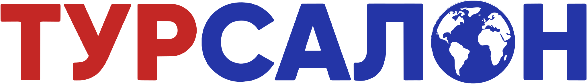
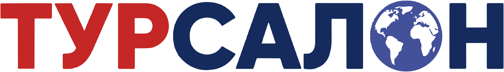

Полная векторная очистка, удаление слогана снизу, прозрачный альфа-канал без белых ореолов. Готов для сайта, соцсетей, печатной полиграфии и вывесок.


Бесконечный масштаб, четкость на любых экранах, вывесках и полиграфии.
Максимальное разрешение без потери качества для полиграфии и баннеров.
Стандартный прозрачный PNG для шапки сайта и презентаций.
Современный легкий веб-формат для моментальной загрузки сайта.
Векторный документ для типографий, дизайнеров и плоттерной резки.
Белая инверсная версия для размещения на тёмных фото и темных футерах.